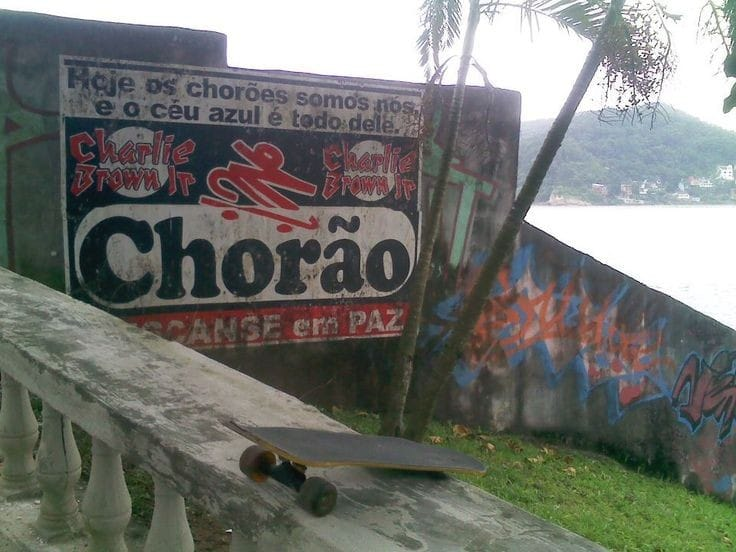

Post #1
"O que eu consigo ver é só um terço do problema, é o sistema que tem que mudar não se pode parar de lutar senão não muda. A juventude tem que estar a fim, tem que se unir. O abuso do trabalho infantil, a ignorância faz diminuir a esperança. Na TV o que eles falam sobre o jovem não é sério, não é sério. Então deixa ele viver, é o que liga"